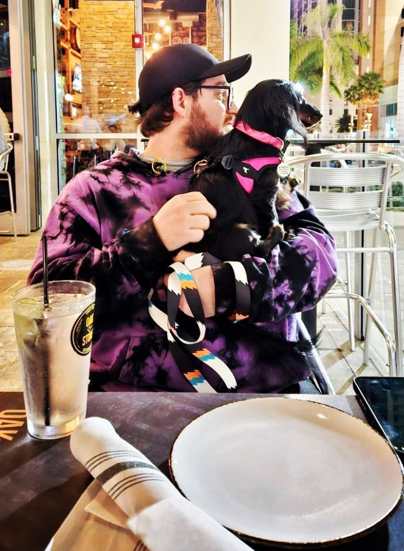

Jacob Rousseau

Summary
I love everything about tech and I love learning more about tech and coding.
Education
-
Soon udemy Certificate of completion from this boot camp
Work Experience
Walmart
November 2012 to present
- Overnight stocking: Making sure everything was stocked correctly and got the store ready for the next day.
- Housewares associate: Making sure the department was clean and stocked well and helped with customer service.
- Ap customer host: Greeted customers and receipt checked for un-bagged items, also helped asset protection with theft.
- Online grocery pickup: Shopped the store and picked items for customer orders, dispense orders to customers when they showed up.
- Asset protection investigator: The number one goal for AP is safety for customers and associates, we also stop theft and work reports on the computer for possible money shortages and accident cases.
Tire Kingdom
November 2015-January 2016
- Tire and lube tech: changed oil and change balanced and rotate tires.
Skills
- Computer repair: 💀💀💀💀💀
- Microsoft Office: 💀💀💀
- Creativity: 💀💀💀💀
Other
About me
Contact me